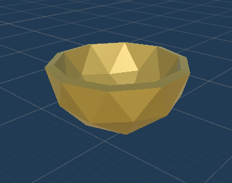
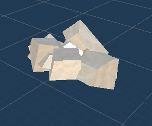
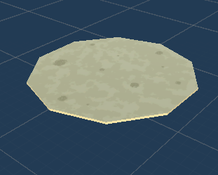

Taco Terror Redux
An image of the original Taco Terror game in the Unity Editor. Created by Ryan Havanas and Jack Ruch.
This project was started within the Game Creation Club at The Ohio State University (GCC) for thier "month long project" event. Typically, the club hosts Game Jams (consecutive 24 hour events), but decided to host this month long project in order to get more polished games and help those with less experience have more time to learn game creation tools like Unity, Blender and Unreal Engine. I worked on a team with programmers Jack Ruch and Ryan Havanas. These members had previously been invovled in the club and had made a 2D version of Taco Terror in the past. This previous game had the same story as the redux did: You (and your partner) are part of a taco truck that has been rigged with a bomb. In the style of the movie "Speed", the bomb would explode if a certain speed was not maintained. As such, the game was set on a road and the truck never stops, requiring orders to be taken and delivered while moving. The idea for this month-long project was therefore to make this originally 2D game into a 3D game. Since I had little Unity experience at the time, I was tasked with making models for the game.
Project Organization
The project was structured mainly using Trello and a Design Document for the game (found here). I used these sources along with direct communication with my team members to figure out not just which models to make, but how to make them. Specifics included which kind of truck to model, the scale of objects, and verious texturing specifics.
Learning Blender
I had used Blender minimally in the past, but this was my first time creating complex models and UV maps. Luckily, my brother Brian Gaydos had considerable knowledge in using Blender, and was a great source for best practices when modelling that helped reduce redundancies in my models (improving performance).
Since I was previously aquainted with tools like Sketchup and other surface modelers, I was most comfortable drawing verticies myself, rather than scaling and sculpting primitives. Thus, the first thing I learned was the extrude tool on verticies. I previously used extrude liberally on edges and faces, but later learned that this creates many redundant verticies and can create rendering issues. Through these redundancy errors, I learned to create more slowly, but much more carefully, resulting in higher quality models.
Shows how UV map textures each face of the model. UV map overlay left intentionally on.
UV Mapping
UV Mapping in the game development context invovles how models and game assets are textured, and allows 1 image to be used to completely texture the entire model. This becomes extremely useful for reducing the number of models and textures needed to create a complex asset, and it is also convenient for organization purposes within the game's files.
My past knowledge of UV maps was applied in this project since nearly all assets I made used them. An example of an empty and filled UV map can be seen to the left, with the corresponding model below. Additional UV maps can be seen through the final product game assets in the slide show below.
Results
While a sufficient amount of models were made, the game would have eventually needed more and the other developers were unable to finish the programming side of the project in the allotted time. As such, the game remained unfinished. However, I did learn crucial Blender skills that helped me in my future Game Development Projects.


Bag model
Cooked beef model
Uncooked beef model

Bomb model

Bowl model
Knife model
A cabinet, planned for use in the game to gather ingredients
Cheese model

Cooked chicken model
Uncooked chicken model
Cutting board model
Door model
Hard shell taco model

Lettuce model
Pan model
Cooked pork model
Uncooked pork model

Soft tortilla model
Tomato slice model
Tomato model
Taco truck model
Various models inside the taco truck model.